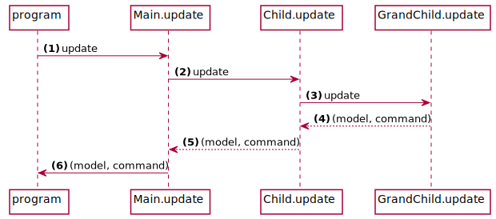

Elmish
-ish
a suffix used to convey the sense of “having some characteristics of”
Elmish implements core abstractions that can be used to build Fable applications following the “model view update” style of architecture, as made famous by Elm.
The goal of the architecture is to provide a solid UI-independent core to build the rest of the functionality around. Elm architecture operates using the following concepts, as they translate to Elmish:
-
Model
This is a snapshot of your application's state, defined as an immutable data structure. -
Message
This an event representing a change (delta) in the state of your application, defined as a discriminated union. -
Command
This is a carrier of instructions, that when evaluated may produce one or more messages. -
Init
This is a pure function that produces the inital state of your application and, optionally, commands to process. -
Update
This is a pure function that produces a new state of your application given the previous state and, optionally, new commands to process. -
View
This is a pure function that produces a new UI layout/content given the current state, defined as an F# function that uses a renderer (such as React) to declaratively build a UI. -
Program
This is an opaque data structure that combines all of the above plus asetStatefunction to produce a view from the model. See theProgrammodule for more details.
Installation
1:
|
|
Concepts
Dispatch loop

Once started, Program runs a dispatch loop, producing a new Model given the current state and an input Message.
See the basics example for details.
Parent-child composition and user interaction
Parent-child hierarchy is made explicit by wrapping model and message types of the child with those of the parent.
Following diagrams show interactions between components in case of a user interacting with an example web app. Note that Elmish doesn't depend on any specific UI such as HTML rendering (it actually does not require any UI at all), and HTML is used just for explanation purposes.
First the UI is initialised:

programrequests the initial model from the parent, top-level component (Main)- Parent component requests the initial model from its child subcomponent (
Widget) Widget.initialModelreturns its initial model to the parentMain.initialModelwraps child's model and returns the top-level initial model to the program- Program sends the model to the parent's
Main.view - Parent unwraps the child's component model from its model and sends it to child's
Widget.view Widget.viewreturns a renderedHTMLpageMain.viewembeds child'sHTMLpage in itsHTMLpage- The resulting
HTMLpage is send to the user
Then the user interacts with the browser:

- User clicks on the increase button
Widget.viewdispatches anIncreasemessageMain.viewhas augemented thedispatchso the message becomesWidgetMsg Increaseas it is sent along toprogramprogramcallsMain.updatewith this message andmainModel- As the message was tagged with
WidgetMsg,Main.updatedelegates the update toWidget.update, sending along the way thewidgetModelpart ofmainModel Widget.updatemodifies the model according to the given message, in this caseIncrease, and returns the modifiedwidgetModelplus a commandMain.updatereturns the updatedmainModeltoprogramprogramthen renders the view again passing the updatedmainModel
See the example for details.
Tasks and side-effects
Tasks such as reading a database or making a Web API call are performed using async and promise blocks or just plain functions.
These operations may return immediately but complete (or fail) at some later time.
To feed the results back into the dispatch loop, instead of executing the operations directly, we instruct Elmish to do it for us by wrapping the instruction in a command.
Commands
Commands are carriers of instructions, which you issue from the init and update functions.
Once evaluated, a command may produce one or more new messages, mapping success or failure as instructed ahead of time.
As with any message dispatch, in the case of Parent-Child composition, child commands need to be mapped to the parent's type:

Programcalls theMain.updatewith a messageMain.updatedoes its own update and/or delegates toChild.updateChild.updatedoes its own update and/or delegates toGrandChild.updateGrandChild.updatereturns with its model andCmd(of GrandChild message type)Child.updateprocesses GrandChild's model and maps itsCmdintoCmdof Child's message type and batches it with its ownCmd, if anyMain.updateprocesses Child's model and maps itsCmdintoCmdof Main's message type and batches it with its ownCmd, if any
Here we collect commands from three different levels. At the end we send all these commands to our Program instance to run.
See the Cmd module for ways to construct, map and batch commands.
Subscriptions
Most of the messages (changes in the state) will originate within your code, but some will come from the outside, for example from a timer or a websocket. These sources can be tapped into with subscriptions, defined as F# functions that can dispatch new messages as they happen.
See the subscriptions example for details.
View
The core is independent of any particular technolgy, instead relying on a renderer library to implement setState in any way seen fit.
In fact, an Elmish app can run entirely without a UI!
At the moment, there are two UI technologies for which rendering has been implemented: React and React Native.
For details please see elmish-react.
Interacting with a browser
Larger Elmish applications for the browser may benefit from advanced features like routing and explicit navigation control.
For information about these features please see elmish-browser.
Observing the state changes
Every message going through the dispatch loop can be traced, along with the current state of the app. Just augument the program instance with a trace function:
1: 2: 3: 4: 5: |
|
And start seeing the state and messages as updates happen in the browser developer console.
For more advanced debugging capabilities please see elmish-debugger.